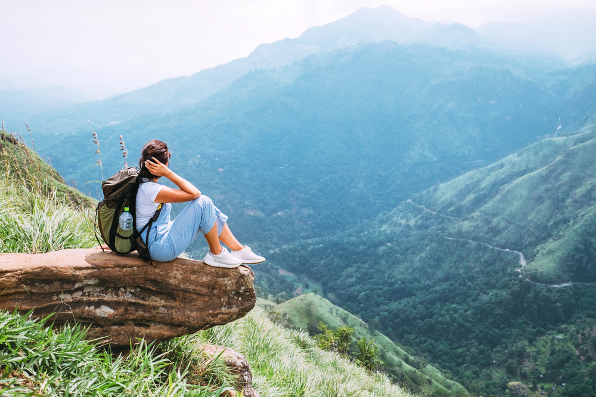

Sri Lanka | Ella
Ella (Sinhala: ඇල්ල; Lit. "water fall"; Tamil: எல்ல) is a small town in the Badulla District of Uva Province, Sri Lanka governed by an Urban Council. It is approximately 200 kilometres (120 mi) east of Colombo and is situated at an elevation of 1,041 metres (3,415 ft) above sea level.[2] The area has a rich bio-diversity, dense with numerous varieties of flora and fauna. Ella is surrounded by hills covered with cloud forests and tea plantations. The town has a cooler climate than surrounding lowlands, due to its elevation. The Ella Gap allows views across the southern plains of Sri Lanka.
Elevation: 1,041 m
Weather: 22°C, Wind SW at 3 km/h, 62% Humidity
Province: Uva Province
Distric : Badulla District
Population: 44,763 (2012)
Postal code: 90090